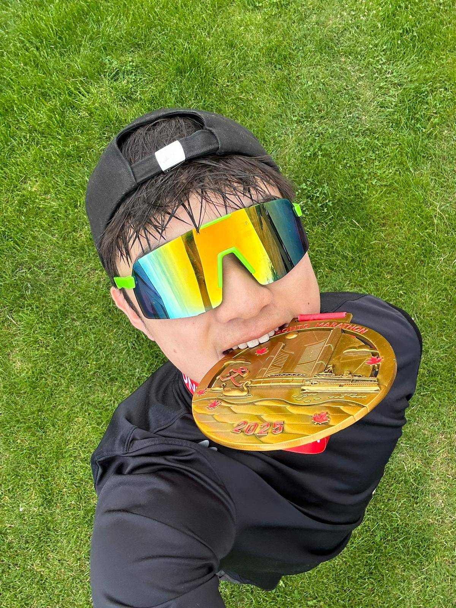

Hi, I’m Martin.
Data Science + Statistics @ UofT
I enjoy building projects around things I’m curious about, especially sports, maps, and what data can tell us about them.
Explore my workLooking ahead to Summer 2027 internships
about me
01I’m a student at the University of Toronto, double majoring in Data Science and Statistics. I’m interested in how data helps explain what happens around us, especially in sports and mapping. Last summer, I became trained as a Signals Operator in the Canadian Armed Forces Reserves, setting up and troubleshooting communications equipment during training.
A few tools I work with:
- Python
- R & RStudio
- SQL
- JavaScript
- Git & GitHub
- Excel
DEVELOPING Java, Power BI, Tableau, and GIS methods through coursework and independent practice.
I’m working toward a career in data & sports analytics, while continuing to develop my skills in statistics, programming, and GIS. Away from my laptop, I enjoy running, following sports, and exploring new places.

experience
02selected projects
GitHubA few ways I’ve put my curiosity into practice.